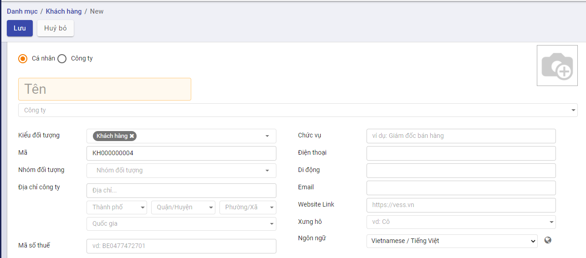
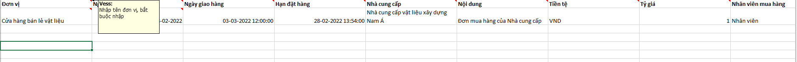
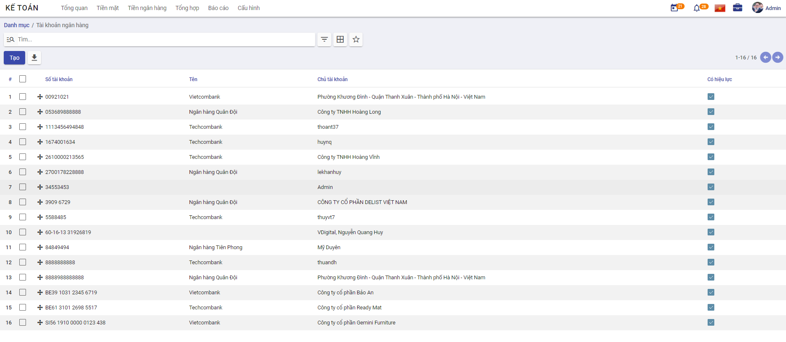

Khai báo danh mục
Thực hiện hướng dẫn cách thức thực hiện về các Danh mục cần khai báo trên phần mềm Kế toán. Việc khai báo các Danh mục có thể được thực hiện tại bất kỳ thời điểm nào tùy thuộc người sử dụng: có thể trước thời điểm nhập chứng từ hay thực hiện được ngay tại thời điểm nhập chứng từ.
Đối tượng
Nhóm đối tượng
Mục đích
Quản lý thông tin về các nhóm đối tượng khác nhau, phục vụ cho việc quản lý danh sách khách hàng và nhà cung cấp của doanh nghiệp.
Chức năng Danh mục Nhóm đối tượng được quản lý tập trung tại phần Danh mục
Các bước thực hiện
Bước 1: Vào Danh mục: chọn Nhóm đối tượng và nhấn nút Chi tiết

Thông tin Danh mục Nhóm đối tượng được hiển thị để người dùng khai báo

Bước 2: Để khai báo thêm Nhóm người dùng, người dùng nhấn nút TạoTrên màn hình Nhóm người dùng và thực hiện Khai báo các thông tin:

- Mã nhóm: Không trùng với Mã đã khai báo
- Tên nhóm: Thông tin để quản lý
Bước 3: Nhấn nút Lưu
Khách hàng
Mục đích
Chức năng này cho phép người dùng khai báo các Khách hàng của Công ty. Thực hiện Quản lý danh sách các khách hàng, phục vụ cho việc lập và hạch toán các chứng từ kế toán liên quan đến hoạt động bán hàng, hóa đơn.
Chức năng Danh mục Khách hàng được quản lý tập trung tại phần Danh mục của Phân hệ Kế toán
Xem video hướng dẫn
Hướng dẫn trên phần mềm
Bước 1: Vào Danh mục/Đối tượng/Khách hàng. Nhấn Chi tiết để vào danh mục
Bước 2: Nhấn nút tạo  để thực hiên thêm mới khách hàng
để thực hiên thêm mới khách hàng
Bước 3: Nhập đủ thông tin cần thiết:

-
Nếu khách hàng là một cá nhân thực hiện chọn Cá nhân nếu khách hàng là một công ty, thực hiện chọn Công ty
-
Nhập tên khách hàng hoặc tên công ty
-
Chọn công ty nếu khách hàng thuộc một công ty bên ngoài
-
Chọn kiểu đối tượng bổ sung nếu khách hàng đó vừa là khách hàng hoặc vừa là nhà cung cấp
-
Nhập địa chỉ, mã số thuế. Nếu chọn Công ty thì địa chỉ và mã số thuế mặc định bằng địa chỉ, mã số thuế của công ty đã chọn
-
Nhập thông tin chức vụ, số điện thoại, số di động , email, website, xưng hô
-
Thay đổi ảnh đại diện của khách hàng bằng cách nhấn nút
 và lựa chọn ảnh đại diện mong muốn
và lựa chọn ảnh đại diện mong muốn -
Có thể bổ sung thêm địa chỉ liên lạc của khách hàng bằng cách vào nhóm Các liên lạc & địa chỉ, thêm mới địa chỉ
Một cửa sổ mới hiện ra, nhập đủ thông tin địa chỉ và chọn Lưu

- Nội dung khai báo tại Lên hóa đơn:
- Thông tin Ngân hàng và Số tài khoản: Doanh nghiệp có giao dịch Mua hàng/Bán hàng với Khách hàng và thực hiện Thanh toán: thông tin Số tài khoản đã khai báo sẽ được hiển thị để Kế toán thực hiện chọn và Thanh toán

Bước 3: Nhấn nút Lưu  để lưu lại thông tin nhân viên đã nhập
để lưu lại thông tin nhân viên đã nhập
Sau khi lưu thành công, trên mỗi một khách hàng, người dùng có thể theo dõi được một số thông tin đi kèm như:
Số đơn bán hàng, đơn mua hàng được tạo
Thông tin giao hàng
Số hóa đơn đã xuất
Công nợ nhà cung cấp
Tài liệu đính kèm
Khi nhấn vào các Đầu mục theo dõi, hệ thống tự động Truy vết các Giao dịch gắn đã thực hiện với Khách hàng
Lưu ý:
-
Để sửa lại thông tin khách hàng đã khai báo, sử dụng chức năng Sửa trên thanh công cụ.
-
Khách hàng đã được sử dụng tại các chứng từ kế toán khác sẽ không được xóa
Nhà cung cấp
Mục đích
Quản lý danh sách các nhà cung cấp, phục vụ cho việc lập và hạch toán các chứng từ kế toán liên quan đến hoạt động mua hàng hoá, dịch vụ.
Xem video hướng dẫn
Hướng dẫn trên phần mềm
Bước 1: Vào Danh mục/Đối tượng/Nhà cung cấp. Nhấn Chi tiết để vào danh mục
Bước 2: Nhấn nút tạo để thực hiên thêm mới nhà cung cấp
Bước 3: Nhập đủ thông tin cần thiết:

-
Nếu nhà cung cấp là một cá nhân thực hiện chọn Cá nhân nếu khách hàng là một công ty, thực hiện chọn Công ty
-
Nhập tên nhà cung cấp hoặc tên công ty
-
Chọn công ty nếu nhà cung cấp thuộc một công ty bên ngoài
-
Chọn kiểu đối tượng bổ sung nếu nhà cung cấp đó vừa là khách hàng hoặc vừa là nhà cung cấp
-
Nhập địa chỉ, mã số thuế. Nếu chọn Công ty thì địa chỉ và mã số thuế mặc định bằng địa chỉ, mã số thuế của công ty đã chọn
-
Nhập thông tin chức vụ, số điện thoại, số di động , email, website, xưng hô
-
Thay đổi ảnh đại diện của nhà cung cấp bằng cách nhấn nút
và lựa chọn ảnh đại diện mong muốn -
Có thể bổ sung thêm địa chỉ liên lạc của nhà cung cấp bằng cách vào nhóm Các liên lạc & địa chỉ, thêm mới địa chỉ
Một cửa sổ mới hiện ra, nhập đủ thông tin địa chỉ và chọn Lưu
- Nội dung khai báo tại Lên hóa đơn:
- Thông tin Ngân hàng và Số tài khoản: Doanh nghiệp có giao dịch Mua hàng/Bán hàng với Khách hàng và thực hiện Thanh toán: thông tin Số tài khoản đã khai báo sẽ được hiển thị để Kế toán thực hiện chọn và Thanh toán
Bước 3: Nhấn nút Lưu để lưu lại thông tin nhân viên đã nhập
Sau khi lưu thành công, trên mỗi một khách hàng, người dùng có thể theo dõi được một số thông tin đi kèm như:
Số đơn bán hàng, đơn mua hàng được tạo
Thông tin giao hàng
Số hóa đơn đã xuất
Công nợ nhà cung cấp
Tài liệu đính kèm
Khi nhấn vào các Đầu mục theo dõi, hệ thống tự động Truy vết các Giao dịch gắn đã thực hiện với Nhà cung cấp

Lưu ý:
-
Để sửa lại thông tin nhà cung cấp đã khai báo, sử dụng chức năng Sửa trên thanh công cụ.
-
Nhà cung cấp đã được sử dụng tại các chứng từ kế toán khác sẽ không được xóa
Nhân viên
Danh mục nhân viên quản lý thông tin về các nhóm đối tượng khác nhau, phục vụ cho việc quản lý danh sách nhân viên của doanh nghiệp
Xem video hướng dẫn
Hướng dẫn trên phần mềm
Bước 1: Vào Danh mục/Đối tượng/Nhân viên. Nhấn Chi tiết để vào danh mục
Bước 2: Nhấn nút tạo để thực hiên thêm mới nhân viên

Bước 3: Nhập đủ thông tin cần thiết:
-
Nhập tên nhân viên
-
Chọn công ty nếu nhân viên thuộc công ty ngoài
-
Chọn kiểu đối tượng nếu nhân viên đó vừa là khách hàng hoặc vừa là nhà cung cấp
-
Nhập địa chỉ, mã số thuế. Nếu chọn Công ty thì địa chỉ và mã số thuế mặc định bằng địa chỉ, mã số thuế của công ty đã chọn
-
Nhập thông tin chức vụ, số điện thoại, số di động , email, website, xưng hô
-
Thay đổi ảnh đại diện của nhân viên bằng cách nhấn nút
và lựa chọn ảnh đại diện mong muốn -
Có thể bổ sung thêm địa chỉ liên lạc của nhân viên bằng cách vào nhóm Các liên lạc & địa chỉ, thêm mới địa chỉ
Một cửa sổ mới hiện ra, nhập đủ thông tin địa chỉ và chọn Lưu
- Nội dung khai báo tại Lên hóa đơn:
- Thông tin Ngân hàng và Số tài khoản: Doanh nghiệp có giao dịch Mua hàng/Bán hàng với Khách hàng và thực hiện Thanh toán: thông tin Số tài khoản đã khai báo sẽ được hiển thị để Kế toán thực hiện chọn và Thanh toán
Bước 3: Nhấn nút Lưu để lưu lại thông tin nhân viên đã nhập
Sau khi lưu thành công, trên mỗi một khách hàng, người dùng có thể theo dõi được một số thông tin đi kèm như:
Số đơn bán hàng, đơn mua hàng được tạo
Thông tin giao hàng
Số hóa đơn đã xuất
Công nợ nhà cung cấp
Tài liệu đính kèm
Khi nhấn vào các Đầu mục theo dõi, hệ thống tự động Truy vết các Giao dịch gắn đã thực hiện với Nhân viên

Lưu ý:
-
Để sửa lại thông tin nhân viên đã khai báo, sử dụng chức năng Sửa trên thanh công cụ.
-
Nhân viên đã được sử dụng tại các chứng từ kế toán khác sẽ không được xóa
Hàng hóa vật tư
Nhóm danh mục hàng hóa vật tư cho phép người dùng:
- Thiết lập các đơn vị tính, phục vụ cho việc khai báo vật tư hàng hoá
- Thiết lập các nhóm phục vụ cho công tác quản lý vật tư, hàng hoá
- Quản lý các kho vật tư, hàng hoá của đơn vị
- Quản lý danh sách vật tư, hàng hoá, công cụ dụng cụ của đơn vị
Nhóm VTHH
Mục đích
Hệ thống đã thiết lập sẵn danh sách một số danh mục nhóm vật tư, hàng hoá, phục vụ cho việc quản lý vật tư, hàng hoá của doanh nghiệp. Tuy nhiên, Kế toán của Doanh nghiệp vẫn có thể bổ sung, sửa đổi lại nhóm vật tư, hàng hoá sao cho phù hợp với nhu cầu quản lý thực tế tại doanh nghiệp.
Chức năng Danh mục Nhóm Vật tư hàng hóa được quản lý tập trung tại phần Danh mục
Các bước thực hiện
Bước 1: Vào Danh mục: chọn Nhóm VTHH và nhấn nút Chi tiết
Thông tin Nhóm VTHH được hiển thị để người dùng khai báo
Bước 2: Để khai báo thêm Nhóm người dùng, người dùng nhấn nút TạoTrên màn hình Nhóm VTHH và thực hiện Khai báo các thông tin:

Bước 3: Nhấn nút Lưu
Lưu ý:
- Nhấn Sửa: Nếu muốn thay đổi thông tin Nhóm sản phẩm đã khai báo
- Với các Nhóm sản phẩm không có nhu cầu theo dõi tiếp, sử dụng chức năng Sửa và Bỏ chọn 'Có hiệu lực'
Vật tư hàng hóa
Danh mục vật tư, hàng hoá cho phép quản lý toàn bộ vật tư, hàng hoá, thành phẩm, dịch vụ của doanh nghiệp, phục vụ cho việc lập và hạch toán các chứng từ liên quan đến hoạt động mua, bán hàng hoá, nhập xuất kho vật tư, hàng hoá, công cụ dụng cụ
Xem video hướng dẫn
Hướng dẫn trên phần mềm
Khai báo vật tư, hàng hóa thông thường
Để khai báo được hàng hóa, vật tư, người dùng có thể thực hiện bằng hai cách:
Cách 1: Tạo mới trực tiếp trên giao diện
Cách 2: Import dữ liệu
Tạo mới hàng hóa trực tiếp trên giao diện
Bước 1: Vào Danh mục/Hàng hóa vật tư/Vật tư hàng hóa. Nhấn Chi tiết để vào danh mục
Bước 2: Tại màn hình danh sách, Nhấn nút tạo để thực hiên thêm mới hàng hóa
Bước 3: Khai báo các thông tin chi tiết về vật tư, hàng hoá => với các thông tin có màu hồng, phần mềm sẽ bắt buộc phải khai báo.

-
Nhập tên hàng hóa đang sử dụng
-
Chọn loại hàng hóa theo yêu cầu, có thể là hàng hóa, công cụ dụng cụ, nguyên vật liệu, thành phẩm
-
Chọn nhóm vật tư hàng hóa. Tùy thuộc vào tính chất hàng hóa để chọn nhóm VTHH phù hợp. Thông tin nhóm VTHH sẽ ảnh hưởng đến cách hạch toán lên bút toán
Nếu hàng đang nhập thuộc loại hàng hóa, thành phẩm thì chọn nhóm VTHH là hàng hóa.
Nếu hàng đang nhập thuộc loại nguyên vật liệu thì chọn nhóm VTHH là nguyên vật liệu.
-
Chọn ngành nghề kinh doanh phù hợp với hàng hóa đang nhập. Sau khi chọn, phần mềm tự động hiển thị loại thuế áp dụng cho hàng hóa
-
Nhập thông tin giá bán, giá vốn nếu có. Thông tin này sẽ được hiển thị tại đơn bán hàng, đơn mua hàng khi người dùng chọn tới sản phẩm có chứa giá bán, giá vốn.
Lưu ý: Giá vốn sẽ được thay đổi tùy theo cách thức xuất - nhập kho đang được sử dụng tại nhóm VTHH
- Chọn đơn vị tính phù hợp với hàng hóa đang nhập
Bước 4: Nhấn Lưu để lưu lại thông tin
Import vật tư, hàng hóa
Vào danh mục hàng hóa vật tư, thực hiện Import vật tư hàng hóa cần sử dụng
Cách 1: Tại màn hình danh sách vật tư hàng hóa, chuyển cách xem dạng danh sách bằng cách chọn nút Xem bằng danh sách
Tại màn hình danh sách, thực hiện tích chọn 1 bản ghi, nhấn biểu tượng Thiết lập hình bánh xe, chọn Xuất để xuất file mẫu bằng excel
Trên màn hình Xuất dữ liệu , người dùng có thể chọn mẫu Vật tư, hàng hóa

Hoặc người dùng có thể tự tạo một mẫu riêng cho mình bằng cách trên giao diện các cột bên trái, nhập thông tin tại Tìm kiếm và nhấn Enter
Chọn dấu Cộng để thêm cột cần xuất dữ liệu sang bên phải

Sau khi có đầy đủ danh sách các trường thông tin cần xuất thì thực hiện lưu mẫu bằng cách chọn chức năng mẫu mới, nhập tên mẫu cần lưu và nhấn nút Lưu

Nhấn Xuất để thực hiện xuất file excel.
Trên file excel vừa xuất, người dùng thực hiện nhập các thông tin vật tư hàng hóa đầu kỳ tương ứng với các cột bắt đầu từ dòng thứ 2, sau khi nhập thông tin cần import thì thực hiện lưu lại file có định dạng .xls. Đây chính là file dữ liệu dùng để import
-
Mã nội bộ: Bắt buộc nhập, nhập mã hàng hóa
-
Tên: Bắt buộc nhập, nhập tên hàng hóa
-
Đơn vị tính: Bắt buộc nhập, nhập tên đơn vị tính
-
Đơn vị tính mua hàng: Bắt buộc nhập, nhập tên đơn vị tính
-
Loại: Bắt buộc chọn, chọn một trong các giá trị sau: Hàng hóa Dịch vụ Nguyên vật liệu Thành phẩm Công cụ dụng cụ - Tài sản
-
Nhóm sản phẩm: Bắt buộc nhập, nhập tên nhóm sản phẩm hoặc có thể lựa chọn nhóm sản phẩm đang có s
Tất cả / Chi phí
Tất cả / Dịch vụ
Tất cả / Hàng hóa
Tất cả / Nguyên vật liệu
-
Giá vốn: Không bắt buộc nhập, nhập giá vốn hàng hóa
-
Giá bán: Không bắt buộc nhập, nhập giá bán hàng hóa
-
Ngành nghề kinh doanh: Bắt buộc nhập, nhập mã ngành nghề kinh doanh
-
Thuế bán hàng: Không bắt buộc nhập, nhập tên loại thuế
-
Mô tả: Không bắt buộc nhập, nhập mô tả chung
Sau khi có file import, người dùng nhấn biểu tượng hình ngôi sao, chọn Thêm bản ghi

Nhấn nút Nạp tập tin để chọn file cần import, chọn file cần import
Sau khi file dữ liệu được tải lên, nhấn Kiểm thử để kiểm tra dữ liệu đã được nhập đúng chưa

Nếu ra thông báo màu đỏ: Dữ liệu đang bị lỗi, cần thực hiện sửa lại cho đến khi chính xác. Sau khi sửa dữ liệu thì cần nhấn Nạp tập tin để chọn lại file dữ liệu vừa sửa
Nếu ra thông báo màu vàng: Cảnh báo có thông tin sai xót nhưng vẫn có thể bỏ qua được
Nếu ra thông báo màu xanh: Dữ liệu đã hợp lệ và nhấn Nhập để import dữ liệu. Sau khi nhấn nhập, hệ thống sẽ thực hiện import, quay về màn hình danh sách vật tư hàng hóa và hiển thị số lượng bản ghi import thành công
Cách 2: Nhấn biểu tượng hình ngôi sao, chọn Thêm bản ghi
Sau khi mở màn hình import thông tin, thực hiện xuất file mẫu bằng cách chọn Mẫu nhập liệu VTHH để thực hiện xuất file mẫu excel

Trên file excel vừa xuất, người dùng thực hiện nhập thông tin hàng hóa đầu kỳ. Với file được xuất hướng dẫn cụ thể có trong phần commnent tại hàng đầu tiên của mỗi cột

-
Mã nội bộ: Bắt buộc nhập, nhập mã hàng hóa
-
Tên: Bắt buộc nhập, nhập tên hàng hóa
-
Đơn vị tính: Bắt buộc nhập, nhập tên đơn vị tính
-
Đơn vị tính mua hàng: Bắt buộc nhập, nhập tên đơn vị tính
-
Loại: Bắt buộc chọn, chọn một trong các giá trị sau: Hàng hóa Dịch vụ Nguyên vật liệu Thành phẩm Công cụ dụng cụ - Tài sản
-
Nhóm sản phẩm: Bắt buộc nhập, nhập tên nhóm sản phẩm hoặc có thể lựa chọn nhóm sản phẩm đang có s
Tất cả / Chi phí
Tất cả / Dịch vụ
Tất cả / Hàng hóa
Tất cả / Nguyên vật liệu
-
Giá vốn: Không bắt buộc nhập, nhập giá vốn hàng hóa
-
Giá bán: Không bắt buộc nhập, nhập giá bán hàng hóa
-
Ngành nghề kinh doanh: Bắt buộc nhập, nhập mã ngành nghề kinh doanh
-
Thuế bán hàng: Không bắt buộc nhập, nhập tên loại thuế
-
Mô tả: Không bắt buộc nhập, nhập mô tả chung
-
Theo vết: Bắt buộc nhập, chọn một trong các giá trị sau: Theo lô Theo số se-ri duy nhất Không theo dõi
Mặc định khi import là Theo lô
- Tuyến cung ứng: Bắt buộc nhập, chọn một trong các giá trị sau: Sản xuất Mua Sản xuất,mua
Sau khi có file import, người dùng nhấn nút Nạp tập tin để chọn file cần import, chọn file cần import
Sau khi file dữ liệu được tải lên, nhấn Kiểm thử để kiểm tra dữ liệu đã được nhập đúng chưa
Nếu ra thông báo màu đỏ: Dữ liệu đang bị lỗi, cần thực hiện sửa lại cho đến khi chính xác. Sau khi sửa dữ liệu thì cần nhấn Nạp tập tin để chọn lại file dữ liệu vừa sửa
Nếu ra thông báo màu vàng: Cảnh báo có thông tin sai xót nhưng vẫn có thể bỏ qua được
Nếu ra thông báo màu xanh: Dữ liệu đã hợp lệ và nhấn Nhập để import dữ liệu. Sau khi nhấn nhập, hệ thống sẽ thực hiện import, quay về màn hình danh sách vật tư hàng hóa và hiển thị số lượng bản ghi import thành công
Export vật tư, hàng hóa
Để xuất thông tin hàng hóa, vật tư đang có trên hệ thống, người dùng có thể chọn chức năng Xuất để thực hiện lấy thông tin danh sách hàng hóa đang có
Tại màn hình danh sách vật tư hàng hóa, chuyển cách xem dạng danh sách bằng cách chọn nút Xem bằng danh sách
Tại màn hình danh sách, thực hiện tích chọn 1 bản ghi, nhấn biểu tượng Thiết lập hình bánh xe, chọn Xuất để xuất file mẫu bằng excel
Trên màn hình Xuất dữ liệu , người dùng có thể chọn mẫu Vật tư, hàng hóa
Hoặc người dùng có thể tự tạo một mẫu riêng cho mình bằng cách trên giao diện các cột bên trái, nhập thông tin tại Tìm kiếm và nhấn Enter
Chọn dấu Cộng để thêm cột cần xuất dữ liệu sang bên phải
Sau khi có đầy đủ danh sách các trường thông tin cần xuất thì thực hiện lưu mẫu bằng cách chọn chức năng mẫu mới, nhập tên mẫu cần lưu và nhấn nút Lưu
Nhấn Xuất để thực hiện xuất file excel.
Trên file excel vừa xuất, người dùng sẽ xem được thông tin vật tư hàng hóa tương ứng với các cột đã chọn
Khai báo các mặt hàng dịch vụ
Áp dụng với những hàng hoá không có nhu cầu quản lý số lượng tồn trên kho, nhưng vẫn phát sinh hoạt động mua, bán (VD: chi phí mua hàng, chi phí vận chuyển, chi phí hải quan...)
Khi đó, kế toán sẽ thực hiện khai báo tương tự như với VTHH thông thường ở trên nhưng khác biệt ở thông tin sau:
-
Loại hàng hóa là Dịch vụ.
-
Nhóm VTHH là chi phí hoặc dịch vụ
Khai báo tồn hàng đầu kỳ
Trước khi thực hiện sử dụng hệ thống, người dùng có thể khai báo số dư tồn đầu kỳ để quản lý thông tin hàng nhập xuất tồn kho
Bước 1: Vào danh mục đơn vị tính, xem đã có đơn vị tính từ file khách hàng gửi chưa, nếu chưa có thì thêm Đơn vị tính tương ứng
Lưu ý: Hỏi KH có quản lý đơn vị tính quy đổi, thì khi cập nhật danh mục Đơn vị tính có cập nhật số lượng quy đổi theo đơn vị tính chính
Bước 2: Vào danh mục hàng hóa vật tư, thực hiện nhập hàng hóa đầu kỳ, với số lượng hàng hóa lớn thì sử dụng chức năng Import Danh mục vật tư hàng hóa
Các bước làm cụ thể tại chức năng Khai báo vật tư, hàng hóa thông thường
Bước 3: Import 1 Đơn mua hàng, với n dòng chi tiết đơn mua hàng tương ứng với n bản ghi danh mục vật tư hàng hóa tồn kho
Lưu ý: Hỏi khách hàng số tồn kho này là số đến ngày nào, giả sử là số tồn kho đến 31/12/2021, thì tất cả các ngày tại file import Đơn mua hàng để hết ngày 31/12/2021
Các bước thực hiện import đơn mua hàng được mô tả chi tiết tại chức năng Lập đơn mua hàng gửi nhà cung cấp hoặc làm theo hướng dẫn dưới đây:
Vào phân hệ Mua hàng, Chọn Đơn mua hàng

Hoặc thực hiện Tìm kiếm trực tiếp chức năng trên ô tìm kiếm chung của hệ thống

Trên danh sách đơn hàng, nhấn biểu tượng hình ngôi sao, chọn Thêm bản ghi
Sau khi mở màn hình import thông tin, thực hiện xuất file mẫu bằng cách chọn Mẫu nhập khẩu đơn mua hàng để thực hiện xuất file mẫu excel

Trên file excel vừa xuất, người dùng thực hiện nhập thông tin đơn hàng tương ứng tại các cột, hướng dẫn cụ thể có trong phần commnent tại hàng đầu tiên của mỗi cột

Sau khi nhập thông tin vào file, thực hiện nhập dữ liệu bằng cách nhấn chọn Nạp tập tin

Chọn file vừa nhập thông tin, đợi hệ thống tải file, sau đó nhấn nút Kiểm thử để kiểm tra thông tin trong file có chính xác không.
Nếu như có lỗi thì sẽ hiển thị thông báo lỗi cụ thể tại cột nào, dòng nào.
Lưu ý: Những thông báo màu hồng là thông tin cần sửa lại, thông báo màu cam có thể bỏ qua
Nếu như cần sửa chữa thông tin trong file nhập liệu thì người dùng chọn lại Nạp tập tin và chọn file vừa sửa
Nếu đã chính xác thì sẽ hiển thị thông báo màu xanh : "Mọi thứ dường như hợp lệ". Người dùng nhấn Nhập để bắt đầu import dữ liệu vào hệ thống

Khi import thành công, hệ thống sẽ tự động quay về màn hình danh sách và hiển thị thông báo số lượng bản ghi đã được import, các bản ghi được import thành công ở trạng thái báo giá
Bước 4: Sau khi import Đơn mua hàng thành công ở bước 3, vào Đơn mua hàng, kích Xác nhận đơn mua hàng, hệ thống sẽ sinh phiếu nhập kho tương ứng
Các bước làm cụ thể được mô tả tại chức năng Xác nhận Đơn hàng từ Nhà cung cấp hoặc làm theo hướng dẫn dưới đây:
Tại đơn hàng đã tạo, sau khi đã thỏa thuận được báo giá với nhà cung cấp và nhà cung cấp trả hàng theo đúng yêu cầu, người mua hàng nhấn nút Xác nhận để hoàn thành đơn hàng
Nếu không còn nhu cầu mua hàng, người bán nhấn Hủy hoặc thực hiện xóa đơn hàng đã tạo
Sau khi có đơn hàng, sản phẩm sẽ được nhận từ nhà cung cấp và nhập vào kho

Bước 5: Tại Đơn mua hàng vừa xác nhận ở bước 4, kích Nhận sản phẩm, hệ thống sẽ hiển thị phiếu nhập kho tương ứng,
Các bước làm cụ thể được mô tả tại chức năng Nhập kho đơn mua hàng hoặc làm theo hướng dẫn dưới đây:
Sau khi thực hiện Xác nhận đơn hàng, chương trình tự động sinh ra một phiếu nhập kho. Người dùng có thể theo dõi tình trạng nhận hàng của sản phẩm trên phiếu nhập kho đã sinh ra và xác nhận số lượng sản phẩm bàn giao theo đơn hàng

Xem video hướng dẫn
Chọn Nhận hàng hoặc nhấn nút Nhận sản phẩm, hệ thống chuyển sang chức năng phiếu nhập kho.

Nếu người dùng muốn sửa ngày chứng từ và ngày hạch toán, nhấn nút Sửa, sửa các ngày có trên tab Thông tin chung của phiếu nhập kho về 31/12/2021 (theo như ví dụ trên để nhập số tồn đầu kỳ) và nhấn Lưu
Thực hiện nhập số lượng hàng đã hoàn thành nhận từ nhà cung cấp
- Nếu Số lượng nhận về kho đủ theo Số lượng của Đơn mua hàng: Thực hiện nhấn Xác nhận để xác nhận toàn bộ Đơn hàng

- Nếu Số lượng nhập kho Chưa đủ theo Số lượng của Đơn mua hàng: Thực hiện nhập số lượng theo thực tế bằng cách nhấn Sửa, vào nhóm Vật tư, hàng hóa chi tiết, nhập số lương hoàn thành, sau đó nhấn Lưu

Nhấn Xác nhận để hoàn thành nhập hàng về kho
Khi đó có 2 hướng thực hiện :
- Nếu chọn Tạo phần dở dang: Với Số lượng còn thiếu, hệ thống tạo sẵn 1 chứng từ Phiếu nhập kho, để Khi nhập kho với Số lượng còn lại, bộ phận Kho tiếp tục vào Phiếu nhập kho (đã tạo phần dở dang) để thực hiện Xác nhận Số lượng nhập kho còn lại.
- Nếu chọn Không tạo phần dở dang: Khi đó hệ thống Tách Số lượng nhu cầu ban đầu Bằng đúng Số lượng thực nhập, còn Số lượng chênh chưa nhận được thì Số lượng hoàn thành = 0
Như vậy Phiếu nhập kho đã Hoàn thành .
Bước 6: Kiểm tra báo cáo tồn kho bằng hai cách:
Cách 1: Vào ứng dụng Báo cáo, chọn báo cáo Sổ chi tiết vật liệu, dụng cụ, sản phẩm, hàng hóa(S2-HKD)

Cách 2: Vào ứng dụng Kho vận, chọn Báo cáo, chọn Báo cáo tồn kho

Kho hàng
Mục đích
Quản lý danh sách các kho vật tư, hàng hoá, phục vụ cho công tác khai báo vật tư, hàng hoá trong doanh nghiệp.
Chức năng Danh mục Kho hàng được quản lý tập trung tại phần Danh mục của Phân hệ Kho vận
Các bước thực hiện
Bước 1: Vào phân hệ Kho vận; chọn chức năng Cấu hình: chọn Kho hàng

Bước 2: Để khai báo thêm Kho hàng, người dùng nhấn nút TạoTrên màn hình Kho hàng và thực hiện Khai báo các thông tin:

Bước 3: Nhấn nút Lưu
Lưu ý:
-
Nhấn Sửa: Nếu muốn thay đổi thông tin kho hàng đã khai báo
-
Sau khi kho hàng được tạo thành công, hệ thống tự động tạo vị trí kho và các kiểu nhập xuất hàng hóa tương ứng với kho đó
Kho
Mục đích
Quản lý danh sách các địa điểm kho vật tư, hàng hoá, phục vụ cho công tác khai báo vật tư, hàng hoá trong doanh nghiệp.
Chức năng Danh mục Kho được quản lý tập trung tại phần Danh mục của Phân hệ Kho vận
Kho có thể được tạo mặc định khi người dùng khai báo kho hàng mới tại Danh mục/Kho hàng
Các bước thực hiện
Bước 1: Vào phân hệ Kho vận; chọn chức năng Cấu hình: chọn Kho hoặc vào Danh mục/hàng hóa vật tư/Kho
Bước 2: Để khai báo thêm Kho, người dùng nhấn nút TạoTrên màn hình Kho và thực hiện Khai báo các thông tin:
Tên địa điểm kho
Đơn vị của kho
Chọn loại địa điểm kho

Bước 3: Nhấn nút Lưu
Lưu ý:
Nhấn Sửa: Nếu muốn thay đổi thông tin kho hàng đã khai báo
Kiểu giao nhận
Mục đích
Quản lý danh sách các loại hình nhập/xuất hàng hóa,vật tư phục vụ cho việc quản lý, kiểm kê hàng trong kho.
Chức năng Danh mục Kiểu giao nhận được quản lý tập trung tại phần Danh mục của Phân hệ Kho vận
Kiểu giao nhận có thể được tạo mặc định khi người dùng khai báo kho hàng mới tại Danh mục/Kho hàng hoặc người dùng tự thêm mới
Các bước thực hiện
Bước 1: Vào phân hệ Kho vận; chọn chức năng Cấu hình: chọn Kiểu giao nhận hoặc vào Danh mục/hàng hóa vật tư/Loại hoạt động

Bước 2: Để khai báo thêm Kiểu giao nhận, người dùng nhấn nút TạoTrên màn hình và thực hiện Khai báo các thông tin:
-
Kiểu hoạt động: Nhập tên kiểu nhập.xuất
-
Đơn vị: Đơn vị của kiểu hoạt động sẽ dùng
-
Mã: Mã của loại nhập/xuất
-
Loại hoạt động: Chọn loại Nhập hoặc loại Xuất
-
Loại nhập/xuất: Chi tiết hình thức nhập hoặc xuất
-
Tài khoản nợ: Chọn tài khoản hạch toán
-
Tài khoản có: Chọn tài khoản hạch toán
-
Điểm đi mặc định: Kho sẽ xuất hàng đi
-
Điểm đích mặc định: Kho hàng sẽ nhập vào

Bước 3: Nhấn nút Lưu
Lưu ý:
- Nhấn Sửa: Nếu muốn thay đổi thông tin kho hàng đã khai báo
Kế toán
Hệ thống tài khoản
Mục đích
Quản lý toàn bộ thông tin Tài khoản của Doanh nghiệp sử dụng hệ thống Kế toán.
Hệ thống đã thiết lập sẵn hệ thống tài khoản theo đúng chế độ kế toán đã được chọn khi Cài đặt và chọn Chế độ kế toán tại thời điểm đầu. Kế toán doanh nghiệp vẫn có thể bổ sung, sửa đổi hoặc xóa bỏ các tài khoản đã có để phù hợp với yêu cầu quản lý thực tế của doanh nghiệp.
Chức năng Danh mục Hệ thống tài khoản được quản lý tập trung tại phần Danh mục của phân hệ Kế toán
Các bước thực hiện
Bước 1: Vào Danh mục: chọn Hệ thống tài khoản và nhấn nút Chi tiết

Thông tin Hệ thống tài khoản được hiển thị để người dùng khai báo

Bước 2: Để khai báo thêm Nhóm người dùng, người dùng nhấn nút Tạo trên màn hình Hệ thống tài khoản và thực hiện Khai báo các thông tin:

- Sau khai báo về Mã và Tên tài khoản; người dùng thực hiện Thiết lập thông tin cho tài khoản đã khai
- Việc thiết lập sẽ liên quan đến toàn bộ luồng dữ liệu hạch toán về sau của 1 tài khoản
Bước 3: Nhấn nút Lưu
Lưu ý:
- Nhấn Sửa: Nếu muốn thay đổi thông tin Tài khoản đã khai báo
- Với các Tài khoản không có nhu cầu theo dõi tiếp, sử dụng chức năng Sửa và Bỏ chọn 'Có hiệu lực'
Tiền tệ
Mục đích
Quản lý toàn bộ thông tin Tiền tệ của Doanh nghiệp sử dụng hệ thống Kế toán.
Hệ thống đã thiết lập sẵn các Loại Tiền tệ trên thị trường. Muốn sử dụng Loại tiền nào thì Kế toán vào chuyển trạng thái Hiệu lực và khai báo thông tin Tỷ giá cho Loại tiền theo đúng thực tế.
Chức năng Danh mục Tiền tệ được quản lý tập trung tại phần Danh mục của phân hệ Kế toán
Các bước thực hiện
Bước 1: Vào Danh mục: chọn Tiền tệ và nhấn nút Chi tiết

Thông tin Tiền tệ được hiển thị để người dùng khai báo
Bước 2: Để đưa vào hoạt động Loại tiền tệ đã có, người dùng chọn thông tin Tiền tệ đó và nhấn nút Sửa trên màn hình Tiền tệ và thực hiện Cập nhật các thông tin:
Bước 3: Nhấn nút Lưu
Lưu ý:
- Với các Tiền tệ không có nhu cầu theo dõi tiếp, sử dụng chức năng Sửa và Bỏ chọn 'Có hiệu lực'
Mẫu số hóa đơn
Bước 1: Vào Danh mục/Kế toán/Mẫu số hóa đơn. Nhấn Chi tiết để vào danh mục

Bước 2: Tại màn hình danh sách, Nhấn nút tạo để thực hiên thêm mới mẫu số

Bước 3: Khai báo các thông tin chi tiết về mẫu số hóa đơn

- Nhập đơn vị
- Chọn loại hóa đơn cần sử dụng
- Nhập mẫu số hóa đơn, ký hiệu hóa đơn theo yêu cầu
Bước 4: Nhấn Lưu để lưu lại thông tin
Ngân hàng
Ngân hàng
Mục đích
Hệ thống đã thiết lập sẵn danh sách các ngân hàng thường được các doanh nghiệp lựa chọn. Tuy nhiên, Kế toán của Doanh nghiệp vẫn có thể bổ sung, sửa đổi hoặc xóa bỏ các ngân hàng đã có sao cho phù hợp với yêu cầu quản lý thực tế của doanh nghiệp.
Chức năng Danh mục Ngân hàng được quản lý tập trung tại phần Danh mục
Các bước thực hiện
Bước 1: Vào Danh mục: chọn Ngân hàng và nhấn nút Chi tiết
Thông tin Ngân hàng được hiển thị để người dùng khai báo

Bước 2: Để khai báo thêm Nhóm người dùng, người dùng nhấn nút Tạo trên màn hình Ngân hàng và thực hiện Khai báo các thông tin:

- Mã Ngân hàng: Không trùng với Mã đã khai báo
- Tên Ngân hàng: Thông tin để quản lý
- Địa chỉ Ngân hàng
- Đánh dấu Sổ quỹ hay Sổ tiền mặt
Bước 3: Nhấn nút Lưu
Lưu ý:
- Nhấn Sửa: Nếu muốn thay đổi thông tin Ngân hàng đã khai báo
- Với các ngân hàng không có nhu cầu theo dõi tiếp, sử dụng chức năng Sửa và Bỏ chọn 'Có hiệu lực'
Tài khoản ngân hàng
Mục đích
Quản lý danh sách các tài khoản ngân hàng, phục vụ cho việc lập và hạch toán các chứng từ kế toán liên quan đến tiền gửi ngân hàng..
Chức năng Danh mục Tài khoản ngân hàng được quản lý tập trung tại phần Danh mục
Các bước thực hiện
Bước 1: Vào Danh mục: chọn Tài khoản ngân hàng và nhấn nút Chi tiết
Thông tin Tài khoản ngân hàng được hiển thị để người dùng khai báo

Bước 2: Để khai báo thêm Nhóm người dùng, người dùng nhấn nút TạoTrên màn hình Tài khoản ngân hàng và thực hiện Khai báo các thông tin:
- Số tài khoản và Ngân hàng của Tài khoản
- Thông tin Loại tài khoản ngân hàng
Bước 3: Nhấn nút Lưu
Lưu ý:
- Nhấn Sửa: Nếu muốn thay đổi thông tin Tài khoản Ngân hàng đã khai báo
- Với các Tài khoản ngân hàng không có nhu cầu theo dõi tiếp, sử dụng chức năng Sửa và Bỏ chọn 'Có hiệu lực'
Chi phí
Đối tượng tập hợp chi phí
Mục đích
Quản lý danh sách đối tượng tập hợp chi phí, phục vụ cho công tác tập hợp chi phí sản xuất và tính giá thành..
Chức năng Danh mục Đối tượng tập hợp chi phí được quản lý tập trung tại phần Danh mục của Phân hệ Kế toán
Các bước thực hiện
Bước 1: Vào Danh mục: chọn Đối tượng tập hợp chi phí và nhấn nút Chi tiết

Thông tin Đối tượng tập hợp chi phí được hiển thị để người dùng khai báo

Bước 2: Để khai báo thêm Đối tượng tập hợp chi phí, người dùng nhấn nút Tạo trên màn hình Đối tượng tập hợp chi phí và thực hiện Khai báo các thông tin:

Bước 3: Nhấn nút Lưu
Lưu ý:
- Nhấn Sửa: Nếu muốn thay đổi thông tin Đối tượng tập hợp chi phí đã khai báo
- Với các Đối tượng tập hợp chi phí không có nhu cầu theo dõi tiếp, sử dụng chức năng Sửa và Bỏ chọn 'Có hiệu lực'
Khoản mục chi phí
Mục đích
Quản lý các khoản mục chi phí phục vụ cho công tác tập hợp chi phí sản xuất và tính giá thành theo Thông tư 133, đồng thời phục vụ cho việc xem báo cáo thống kê theo khoản mục chi phí.
Chức năng Danh mục Khoản mục chi phí được quản lý tập trung tại phần Danh mục của Phân hệ Kế toán
Các bước thực hiện
Bước 1: Vào Danh mục: chọn Khoản mục chi phí và nhấn nút Chi tiết

Thông tin Khoản mục chi phí được hiển thị để người dùng khai báo

Bước 2: Để khai báo thêm Khoản mục chi phí, người dùng nhấn nút Tạo trên màn hình Khoản mục chi phí và thực hiện Khai báo các thông tin:

Bước 3: Nhấn nút Lưu
Lưu ý:
- Nhấn Sửa: Nếu muốn thay đổi thông tin Khoản mục chi phí phí đã khai báo
- Với các Khoản mục chi phí không có nhu cầu theo dõi tiếp, sử dụng chức năng Sửa và Bỏ chọn 'Có hiệu lực'
Chứng từ, sổ sách
Sổ kế toán
Mục đích
Được tạo ra trong trường hợp Doanh nghiệp cần quản lý dữ liệu hạch toán trên nhiều Sổ
Tại mỗi chức năng liên quan đến Nghiệp vụ vào sổ hệ thống sẽ có thông tin để Người dùng chọn. Khi dữ liệu đã được gắn vào từng Sổ kế toán riêng biệt, Kế toán doanh nghiệp có thể quản trị được dữ liệu theo từng Sổ.
Chức năng Danh mục Sổ kế toán được quản lý tập trung tại phần Danh mục
Các bước thực hiện
Bước 1: Vào Danh mục: chọn Sổ kế toán và nhấn nút Chi tiết

Thông tin Danh mục Sổ kế toán được hiển thị để người dùng khai báo

Bước 2: Để khai báo thêm Sổ, người dùng nhấn nút TạoTrên màn hình Sổ kế toán và thực hiện Khai báo các thông tin:

- Mã sổ: Không trùng với Mã đã khai báo
- Chi nhánh: Khai báo áp dụng nhiều Sổ cho chi nhánh cụ thể, hoặc để trống để áp dụng khai báo cho toàn Công ty
- Tên sổ: Thông tin để quản lý
Bước 3: Nhấn nút Lưu